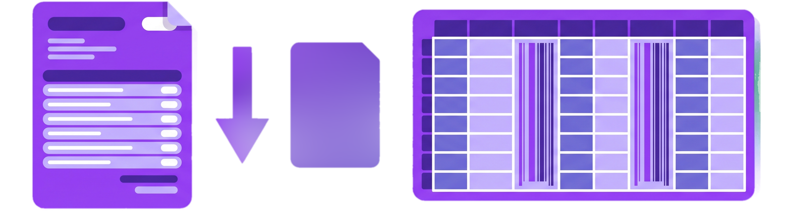
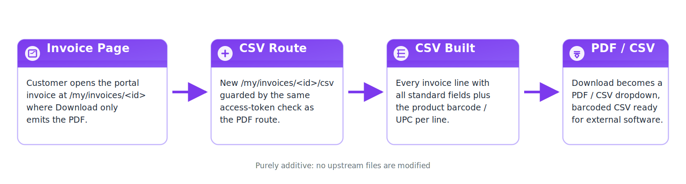
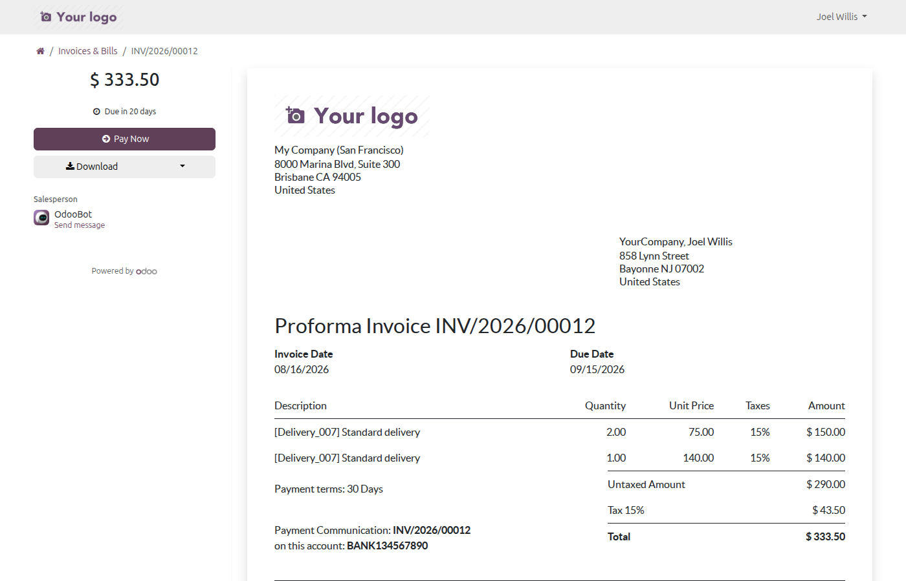
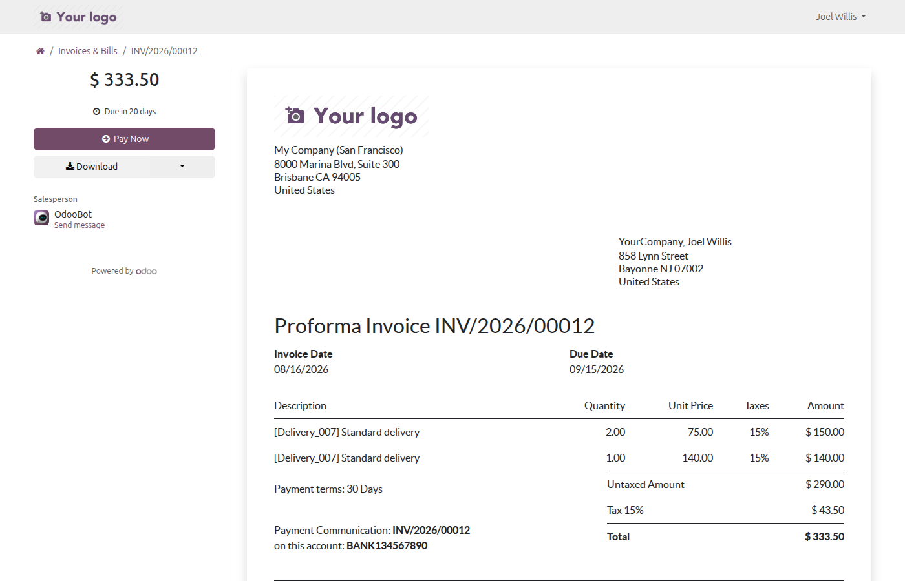
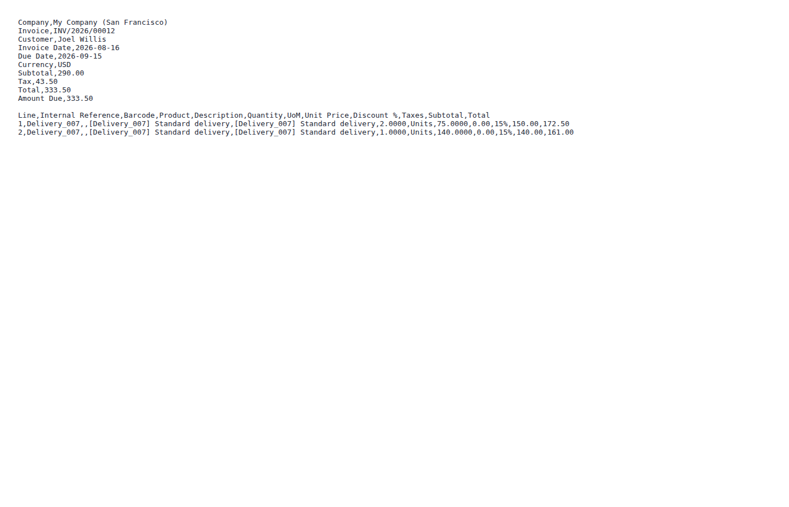

Let customers download portal invoices as CSV with product barcodes/UPCs — alongside the standard PDF.
A new /my/invoices/<id>/csv route returns invoice lines as UTF-8 CSV, ready for upload into the customer’s external software.
Each line carries the product barcode/UPC plus internal reference, quantity, prices, taxes and totals.
The single Download button becomes a dropdown — PDF stays the primary action, CSV one click away.
The CSV route reuses the exact portal access-token guard as the PDF download, so access stays identical.




Install it like any Odoo module (Apps > Update Apps List, then Install). No configuration is required — the CSV option appears in the Download dropdown on every portal invoice page automatically.
This module is built for Odoo 19.0 (module version 19.0.1.0.0) and is live-tested on Odoo 19 Community Edition.
This module is free on the store. Paid apps on the Odoo Apps Store are covered by the store's refund policy: buyers may request a refund within 14 days of purchase if the app does not work as described.
Questions get a reply within one business day at stephen@loomworks.dev.
Yes. The module runs entirely inside your own Odoo database and collects nothing. The CSV is generated on demand from invoice data your customers already have access to on the portal.
The standard invoice line fields — product, internal reference, barcode/UPC, quantity, unit price, taxes and totals — in UTF-8, ready for upload into your customer's external software.